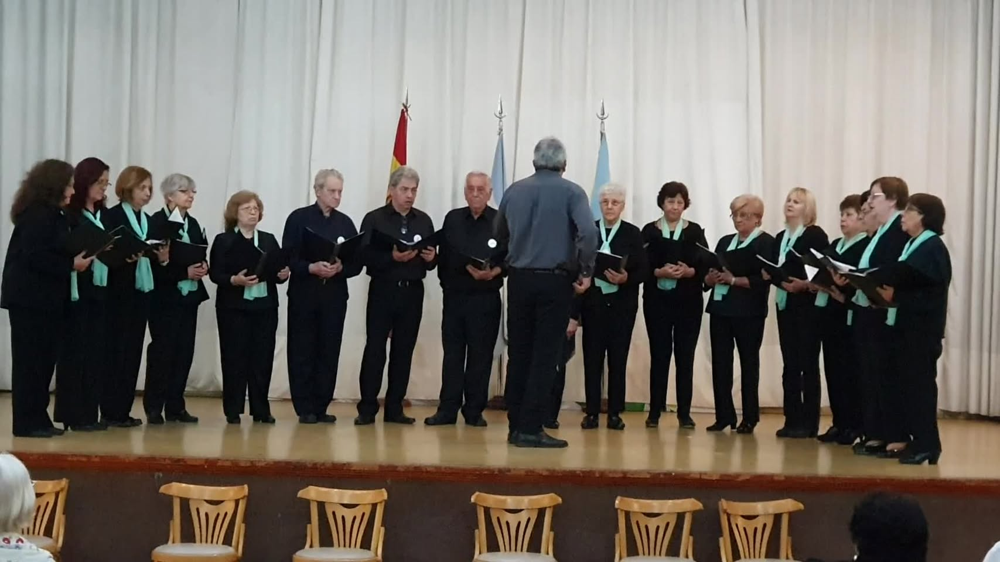
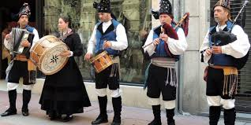
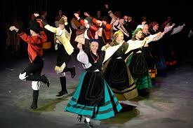
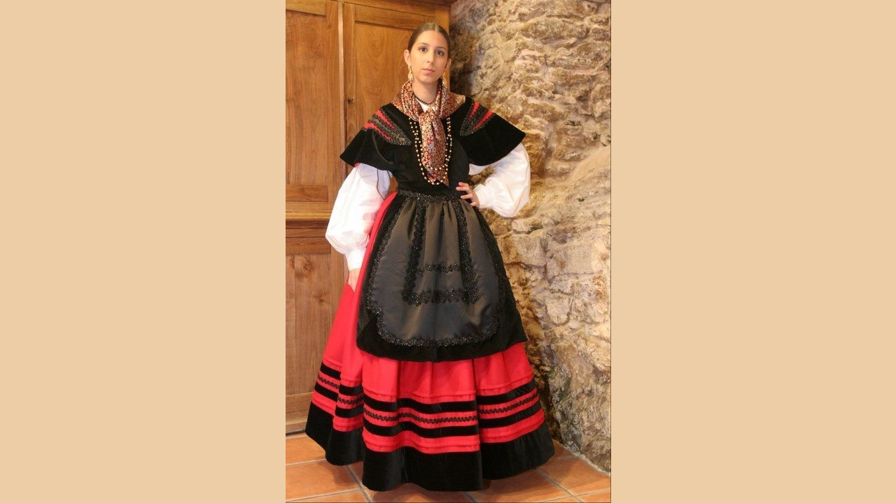

Bienvenidos al Centro Lalín, Agolada y Silleda
Nos alegra recibirte. Explorá nuestras actividades culturales y sumate a nuestra comunidad para compartir tradiciones, arte y raíces gallegas en Buenos Aires.
Actividades culturales destacadas
Taller de escritura "Alas para escribir"
Desarrollá tu creatividad en nuestro taller de escritura.
Más información

Coro del Centro Lalín, Agolada y Silleda
Sumate a nuestro coro y disfrutá de la música tradicional gallega.
Más información

Agrupación de Gaitas Gallegas "Lembranzas do Deza"
Aprendé y participá en la interpretación de la gaita gallega.
Más información

Agrupación de danzas gallegas "Lembranzas do Deza"
Disfrutá y participá en las danzas típicas de Galicia.
Más información

Taller de confección de trajes típicos gallegos
Aprendé a confeccionar los trajes tradicionales gallegos con expertas.
Más información